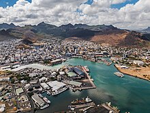

Economy of Mauritius
|  The capital Port Louis | |
| Currency | Mauritian rupee (MUR, Rs) |
|---|---|
| 1 July – 30 June | |
Trade organisations | AU, AfCFTA, WTO, COMESA, SADC, IOC, IORA |
Country group |
|
| Statistics | |
| Population | |
| GDP | |
| GDP rank | |
GDP growth |
|
GDP per capita | |
GDP per capita rank | |
GDP by sector |
|
| 4.7% (2020 est.)[7] | |
Population below poverty line | 8% (2006 est.)[6] |
| 36.8 medium (2017)[8] | |
Labour force | |
Labour force by occupation |
|
| Unemployment | |
Main industries | food processing (largely sugar milling), textiles, clothing, mining, rum distilling and chemicals, metal products, transport equipment, nonelectrical machinery, tourism |
| External | |
| Exports | |
Export goods | clothing and textiles, sugar, cut flowers, molasses, fish, primates (for research) |
Main export partners |
|
| Imports | |
Import goods | manufactured goods, capital equipment, foodstuffs, petroleum products, chemicals |
Main import partners |
|
FDI stock | |
Gross external debt | |
| Public finances | |
| −0.3% (of GDP) (2017 est.)[6] | |
| Revenues | 2.994 billion (2017 est.)[6] |
| Expenses | 3.038 billion (2017 est.)[6] |
| Economic aid | $42 million (1997) |
All values, unless otherwise stated, are in US dollars. | |
{kind=link}
The economy of Mauritius is a mixed developing economy based on agriculture, exports, financial services, and tourism.[14] Since the 1980s, the government of Mauritius has sought to diversify the country's economy beyond its dependence on just agriculture, particularly sugar production.[15]
Overview
[edit]{kind=link}
{kind=link}
In 1961, Professor James Meade painted a bleak picture of the economic prospects of Mauritius, which then had a population of 650,000. All the disadvantages associated with smallness of island states weighed heavily in his conviction that Mauritius was caught in a Malthusian trap and, therefore, if economic progress could at all be achieved, it would be to a very limited extent. Since independence in 1968, Mauritius has developed from a low-income, agriculturally based economy to an upper-middle income[2] diversified economy with growing industrial, financial, ICT and tourist sectors. For most of the period, annual growth has been roughly 4%. This compares very favorably with other sub-Saharan African countries and is largely due to sustained progress in economic conditions; between 1977 and 2008, growth averaged 4.6% compared with a 2.9% average in sub-Saharan Africa.[16] Also important is that it has achieved what few fast growing economies achieve, a more equitable income distribution and inequality (as measured by the Gini coefficient) fell from 45.7 to 38.9 between 1980 and 2006.[16] This remarkable achievement has been reflected in increased life expectancy, lowered infant mortality, and a much-improved infrastructure. Sugarcane is grown on about 90% of the cultivated land area and accounts for 25% of export earnings. The government's development strategy centers on expanding local financial institutions and building a domestic information telecommunications industry. Mauritius has attracted more than 9,000 offshore entities, many aimed at commerce in India and South Africa, and investment in the banking sector alone has reached over $1 billion. Mauritius, with its strong textile sector, has been well poised to take advantage of the Africa Growth and Opportunity Act (AGOA).
Mauritius has attracted US$10.98 billion in Foreign direct investment inflows. Top sectors attracting FDI inflows from Mauritius (from January 2000 to December, 2005) are electrical equipment, telecommunications, fuels, cement and gypsum products and services sector (financial and non-financial). [citation needed]
With a well-developed legal and commercial infrastructure and a tradition of entrepreneurship and representative government, Mauritius is one of the developing world's most successful democracies. The economy has shown a considerable degree of resilience, and an environment already conducive to dynamic entrepreneurial activity has moved further toward economic freedom. The island's institutional advantages are noticeable. A transparent and well-defined investment code and legal system have made the foreign investment climate in Mauritius one of the best in the region. Taxation is competitive and efficient. The economy is increasingly diversified, with significant private-sector activity in sugar, tourism, economic processing zones, and financial services, particularly in offshore enterprises. The government is trying to modernize the sugar and textile industries, which in the past were overly dependent on trade preferences, while promoting diversification into such areas as information and communications technology, financial and business services, seafood processing and exports, and free trade zones. Agriculture and industry have become less important to the economy, and services, especially tourism, accounted for over 72 percent of GDP. The government still owns utilities and controls imports of rice, flour, petroleum products, and cement.
History
[edit]The Mauritian economy has undergone remarkable transformations since independence.[17] From a poor country with high unemployment exporting mainly sugar and buffeted by the vagaries of world demand, Mauritius has become relatively prosperous and diverse, although not without problems.[17]
The 1970s were marked by a strong government commitment to diversify the economy and to provide more high-paying jobs to the population.[17] The promotion of tourism and the creation of the EPZs did much to attain these goals.[17] Between 1971 and 1977, about 64,000 jobs were created.[17] However, in the rush to make work, the government allowed EPZ firms to deny their workers fair wages, the right to organize and strike, and the health and social benefits afforded other Mauritian workers.[17] The boom in the mid-1970s was also fueled by increased foreign aid and exceptional sugar crops, coupled with high world prices.[17]
The economic situation deteriorated in the late 1970s.[17] Petroleum prices rose, the sugar boom ended, and the balance of payments deficit steadily rose as imports outpaced exports; by 1979 the deficit amounted to a staggering US$111 million.[17] Mauritius approached the IMF and the World Bank for assistance.[17] In exchange for loans and credits to help pay for imports, the government agreed to institute certain measures, including cutting food subsidies, devaluing the currency, and limiting government wage increases.[17]
By the 1980s, thanks to a widespread political consensus on broad policy measures, the economy experienced steady growth, declining inflation, high employment, and increased domestic savings.[17] The EPZ with investment principally from China, Hong Kong and Taiwan, and came into its own, surpassing sugar as the principal export-earning sector and employing more workers than the sugar industry and the government combined, previously the two largest employers.[17] In 1986 Mauritius had its first trade surplus in twelve years.[17] Tourism also boomed, with a concomitant expansion in the number of hotel beds and air flights.[17] An aura of optimism accompanied the country's economic success and prompted comparisons with other Asian countries that had dynamic economies, including Hong Kong, Singapore, Taiwan, and South Korea.[17]
The economy had slowed down by the late 1980s and early 1990s, but the government was optimistic that it could ensure the long-term prosperity of the country by drawing up and implementing prudent development plans.[17] A stock exchange opened in Port Louis in 1989.[17] As of 1993, Mauritius had a gross domestic product (GDP) estimated at US$8.6 billion, with a growth rate of 5.5 percent, and an inflation rate of 10.5 percent.[17]
Policies for success
[edit]Recent reports on progress on the Millennium Development Goals by the Overseas Development Institute indicated four key reasons for economic success.[16]
- Heterodox liberalisation and diversification
- Concerted strategy of nation building
- Strong and inclusive institutions
- High levels of equitable public investment
Heterodox liberalisation and diversification
[edit]Mauritius has followed a pragmatic development strategy in which liberalisation process was sequenced and tailored to its competitive advantages and weaknesses.[16] The export-orientated approach has encouraged liberalisation supported by strong state involvement as a facilitator (of the enabling environment for the private sector); as operator (to encourage competition); and as regulator (to protect the economy as well as vulnerable groups and sectors from shocks).[16] Strategies were evidence-based and adapted according to results.[16] There has been consistency and stability, regardless of which political party is in power.[16]
Liberalisation occurred in phases that were initiated to build on advantages the economy enjoyed on the international market.[16]
- 1970s: Mauritius profited from sugar rents, established an export processing zone EPZ and successfully attracted capital and foreign investment in manufacturing, from China, Hong Kong and Taiwan.
- 1980s–1990s: EPZ expanded and led to a significant increase in foreign direct investment (FDI) and tourism. Preferential access to sugar and clothing markets amounted to 7% of GDP in the 1980s and 4.5% in the 1990s, capital and current accounts were liberalised, contributing to an investment and employment boom and the high inflow of FDI brought with it managerial skills.
- 1990s–2010: Further diversification, liberalisation and investment as Chinese investors left to pursue investments in Africa and China.
Concerted strategy of nation building
[edit]A concerted strategy of nation building since Independence created the foundations for sustained growth.[16] Partnerships across ethnic groups allowed economic redistribution to be negotiated and the resulting better balance of economic and political power allowed strong and independent institutions.[16] The emerging political system encouraged a consultative approach to policy formation that allowed strategies for growth to be continued regardless of changes in the parties in power.[16]
Strong and inclusive institutions
[edit]Strong institutions are critical in ensuring country's competitiveness, economic resilience and stability.[16] They have supported development strategies and ensured that export earnings are reinvested in strategic and productive sectors. In the financial sector they have built a regulated and well-capitalised banking and financial system that protected it from toxic assets prior to the 2008 global financial crisis.[16]
Corruption laws
[edit]In 2002, the government adopted the Prevention of Corruption Act, which led to the setting up of an Independent Commission Against Corruption (ICAC) a few months later. The ICAC has the power to detect and investigate corruption and money-laundering offenses and can also confiscate the proceeds of corruption and money laundering. Corruption is not seen as an obstacle to foreign direct investment. Mauritius ranks 45th out of 168 countries in Transparency International’s Corruption Perceptions Index for 2015. Mauritius is one of Africa's least corrupt countries.
High levels of equitable public investment
[edit]Mauritius has a strong human capital foundation developed through consistent and equitable investment in human development.[16] This enabled Mauritius to exploit advantages, learn from expertise brought in through FDI and maintain competitiveness in a fast evolving international market.[16] Education and health services are free and have been expanded in recent years, in order to create further employment opportunities and ensuring inclusive growth. The educated and adaptable workforce were essential elements of 1980s export-orientated growth.[16] Around 90% of entrepreneurs in the export processing zone (EPZ) and in the manufacturing sector were eventually Mauritian nationals, businesspeople had the human capital, education and knowledge needed to exploit market opportunities.[16] According to the Government of Mauritius the general outlook for the manufacturing sector is positive, as the country offers many opportunities to entrepreneurs across the various value chains but insufficient skilled labour and limited research and development will remain impediments to potentially higher growth in this sector.[18]
Financial services
[edit]Mauritius provides an environment for banks, insurance and reinsurance companies, captive insurance managers, trading companies, ship owners or managers, fund managers and professionals to conduct their international business. The economic success achieved in the 1980s engendered the rapid growth of the financial services sector in Mauritius. The following types of offshore activities can be conducted in Mauritius:
- Offshore Banking
- Offshore Insurance
- Offshore Funds Management
- International Financial Services
- Operational Headquarters
- International Consultancy Services
- Shipping and Ship Management
- Aircraft Financing and Leasing
- International Licensing and Franchising
- International Data Processing and Information Technology Services
- Offshore Pension Funds
- International Trading
- International Assets Management
Information and communication technology
[edit]Since 2002, Mauritius has invested heavily into the development of an hub in information and communication technology (ICT). The contribution of the ICT sector accounts for 5.7% of the GDP.[19] The ICT Sector employs 15,390 people.[19]
International employment services
[edit]This section is empty. You can help by adding to it. (December 2017) |
Agriculture
[edit]Sugar industry
[edit]Macroeconomic statistics
[edit]| Name | Source | Year | Notes | Ref |
|---|---|---|---|---|
| GDP (PPP) | ||||
| International Monetary Fund | 2012 | GDP (PPP) is $20.200 billion | [1] | |
| World Bank | 2012 | GDP (PPP) is $19,245,631,329 | [2] [3] | |
| The World Factbook | 2012 | GDP (PPP) is $20,950,000,000 | [4] | |
| GDP (PPP) per capita | ||||
| International Monetary Fund | 2012 | GDP (PPP) per capita is $15,591.974 | [5] | |
| World Bank | 2012 | GDP (PPP) per capita is $14,902 | [6] | |
| The World Factbook | 2013 | GDP (PPP) per capita is $16,100 | [7] | |
| GDP (PPP) per person employed | ||||
| World Bank | 1990-2010 | [8] | ||
| The World Factbook | 2012 | [9] Archived 2013-05-10 at the Wayback Machine | ||
| GDP (nominal) | ||||
| United Nations | 2012 | GDP (nominal) is $10,086,649,093 | [10] | |
| International Monetary Fund | 2013 | GDP (nominal) is US$11.930 billion | [11] | |
| World Bank | 2012 | GDP (nominal) is $10,486,037,634 | [12] [13] | |
| The World Factbook | 2013 | GDP (nominal) is $11.9 billion | [14] Archived 2018-12-24 at the Wayback Machine | |
| GDP (nominal) per capita | ||||
| United Nations | 2012 | [15] | ||
| International Monetary Fund | 2013 | GDP (nominal) per capita is US$9,159.681 | [16] | |
| World Bank | 2012 | [17] | ||
| The World Factbook | 2013 | [18] Archived 2018-12-24 at the Wayback Machine | ||
| Gross national income (Atlas method) | World Bank | 2012 | Gross national income is US$11,070 million | [19] |
| GNI per capita (Atlas method and PPP) | World Bank | 2012 | Average national income (PPP) of US$8,570 per person/Year | [20] |
Household income or consumption by percentage share:
Distribution of family income – Gini index: 39 (2006 estimate)
Agriculture – products: sugarcane, tea, corn, potatoes, bananas, pulses; cattle, goats; fish
Industrial production growth rate: 8% (2000 estimate)
Electricity – production: 1,836 GWh (2002)
Electricity – consumption: 1,707 GWh (2002)
Oil – consumption: 21,000 bbl/d (3,300 m3/d) (2003 estimate)
21,000 bbl/d (3,300 m3/d) (2001 estimate)
Current account balance: $1,339 million (2011 estimate)
$799.4 million (2010 estimate)
Reserves of foreign exchange and gold: $2,797 billion (2012 estimate)
$2,601 billion (2010 estimate)
2013 Index of Economic Freedom rank = 8th
Exchange rates: Mauritian rupees per US dollar – 30.12 (26 March 2014), 30.99 (1 February 2010), 32.86 (2006), 29.14 (2005), 27.50 (2004), 27.90 (2003), 29.96 (2002), 29.13 (2001)
Climate change and the economy
[edit]Mauritius faces significant environmental challenges such as flash floods and coastal erosion, which have substantial economic implications. In June 2024, the government announced plans to introduce a 2% climate levy on company profits to finance projects that combat climate change and restore the natural ecosystem. Companies with sales of less than 50 million rupees ($1.06 million) will be exempt from this levy. The proceeds from this corporate responsibility levy will be used to support national initiatives to protect, manage, invest in, and restore the country's natural ecosystem and combat the effects of climate change. The nation of 1.26 million people is experiencing more climate change-related events and needs to mobilize 300 billion rupees to meet its adaptation and mitigation goals.[20]
In 2024, flash floods brought the capital, Port Louis, to a halt, causing significant disruptions in banking and market activities. Tourism, a crucial source of foreign currency for Mauritius, is expected to generate over $2 billion in earnings from visitors this year. However, more than 37 kilometers (23 miles) of the coastline have been affected by erosion, posing a threat to this vital industry. In response, the government has allocated 3.2 billion rupees to the new climate fund, which will be used to rehabilitate approximately 26 kilometers of shoreline and 30 degraded sites. For the fiscal year ending in June 2025, Mauritius' government expenditure is projected to rise by 17% to 237.3 billion rupees, with revenue expected to grow by 20% to 210.5 billion rupees. This will narrow the fiscal gap to 3.4% of GDP from 3.9% in 2024. Borrowing requirements will increase to 38 billion rupees from 30.7 billion rupees, including 14 billion rupees in foreign financing. Despite higher borrowing, public debt as a percentage of GDP is projected to decrease to 71.5% from 74.5% in 2024, though in absolute terms, it will rise to 567.49 billion rupees from 524.6 billion rupees. Additionally, a government-support agreement is expected to unlock over 15 billion rupees in private-sector investment in renewable energy projects, demonstrating the government's commitment to sustainable development and economic resilience.[20]
See also
[edit]- Board of Investment (Mauritius)
- Bank of Mauritius (central bank)
- Mineral industry of Mauritius
- United Nations Economic Commission for Africa
Notes and references
[edit]- ^ "World Economic Outlook Database, April 2019". IMF.org. International Monetary Fund. Retrieved 29 September 2019.
- ^ a b "World Bank Country and Lending Groups". datahelpdesk.worldbank.org. World Bank. Retrieved 1 July 2020.
- ^ "Population, total". data.worldbank.org. World Bank. Retrieved 3 September 2022.
- ^ a b c d "World Economic Outlook Database, April 2022". IMF.org. International Monetary Fund. Retrieved 8 June 2022.
- ^ "Global Economic Prospects, June 2022" (PDF). openknowledge.worldbank.org. World Bank. 31 May 2022. p. 135. Retrieved 3 September 2022.
- ^ a b c d e f g h i j k l m n o p "The World Factbook". CIA.gov. Central Intelligence Agency. Retrieved 20 April 2019.
- ^ "World Economic Outlook Database, April 2020". IMF.org. International Monetary Fund. Retrieved 1 July 2020.
- ^ "GINI index (World Bank estimate) - Mauritius". data.worldbank.org. World Bank. Retrieved 1 July 2020.
- ^ "Human Development Index (HDI)". hdr.undp.org. HDRO (Human Development Report Office) United Nations Development Programme. Retrieved 17 November 2022.
- ^ "Inequality-adjusted HDI (IHDI)". hdr.undp.org. UNDP. Retrieved 17 November 2022.
- ^ "Labor force, total - Mauritius". data.worldbank.org. World Bank. Retrieved 3 September 2022.
- ^ "Employment to population ratio, 15+, total (%) (national estimate) - Mauritius". data.worldbank.org. World Bank. Retrieved 3 September 2022.
- ^ "Unemployment, total (% of total labor force) (national estimate) - Mauritius". data.worldbank.org. World Bank. Retrieved 3 September 2022.
- ^ "Mauritius". Encyclopaedia Britannica. Retrieved 29 October 2019.
- ^ Daily Maverick:July 2nd, 2023: A rum assisted explanation of the Mauritian Miracle
- ^ a b c d e f g h i j k l m n o p q Milo Vandemoortele and Kate Bird 2010. Progress in economic conditions in Mauritius: Success against the odds. London: Overseas Development Institute
- ^ a b c d e f g h i j k l m n o p q r s
 This article incorporates text from this source, which is in the public domain: Toth, Anthony (1995). "Mauritius: Economy". In Metz, Helen Chapin (ed.). Indian Ocean: five island countries (3rd ed.). Washington, D.C.: Federal Research Division, Library of Congress. pp. 120–121. ISBN 0-8444-0857-3. OCLC 32508646.
This article incorporates text from this source, which is in the public domain: Toth, Anthony (1995). "Mauritius: Economy". In Metz, Helen Chapin (ed.). Indian Ocean: five island countries (3rd ed.). Washington, D.C.: Federal Research Division, Library of Congress. pp. 120–121. ISBN 0-8444-0857-3. OCLC 32508646.
- ^ "Archived copy" (PDF). Archived from the original (PDF) on 5 November 2016. Retrieved 4 November 2016.
{{cite web}}: CS1 maint: archived copy as title (link) - ^ a b "Statistics Mauritius – ICT Statistics Year 2016". statsmauritius.govmu.org. Retrieved 1 November 2017.
- ^ a b Bhuckory, Kamlesh (7 June 2024). "Mauritius Seeks 2% Climate Levy as Pristine Beaches Wash Out". www.bloomberg.com. Retrieved 9 June 2024.
 This article incorporates public domain material from The World Factbook. CIA.
This article incorporates public domain material from The World Factbook. CIA.
External links
[edit]- Economy of Mauritius at Curlie
- Ministry Of Finance and Economic Development
- Central Statistics Office - Official gatherer and provider of statistics for Mauritius